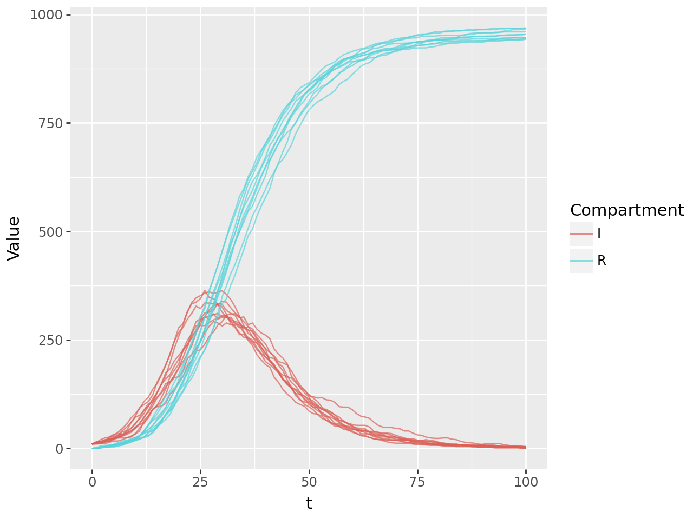
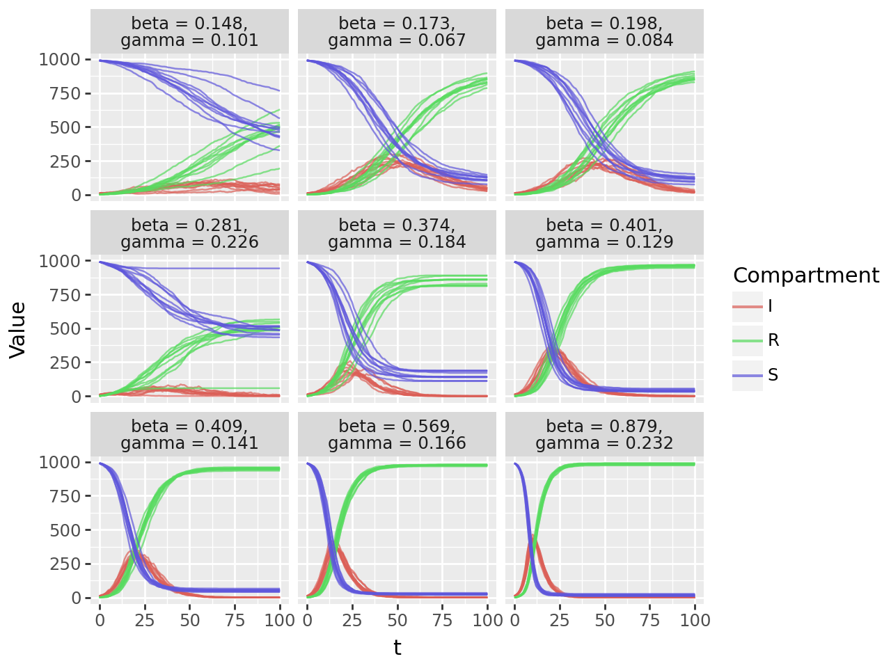

This notebook demonstrates how to generate data using a Susceptible-Infected-Recovered (SIR) model with the emidm package. The generated data can be used to train deep learning surrogates for infectious disease modeling.
The first two sections (Generate Simulation Data and Prepare Training Dataset) make use of emidm to generate our training data and are provided in brief to show what data is being generated and to ease into the notebook. The next three sections introduce how to train your surrogate model, validate this and explore ways of using this.
The last section are possible extensions for those who finish early, which ask you to think about tweaking the code used to test your understanding about how surrogates are trained, or to explore how to use them further analysis.
Objectives
Simulate SIR model dynamics using the emidm package.
Generate multiple realizations of the model with varying parameters.
Prepare the simulated data for training deep learning surrogates.
Train different surrogate models and compare these
Visualise performance of surrogates
Enabling GPU Acceleration
To utilize GPUs for faster training of our neural networks, we need to change the runtime type in your Colab notebook or similar cloud-based environments. Here are the general steps:
Navigate to Runtime Settings:
In Colab, go to “Runtime” > “Change runtime type.”
In other environments, look for similar options in the settings or configuration menu.
Select Hardware Accelerator:
Choose “GPU” from the “Hardware accelerator” dropdown menu.
Save and Restart Runtime:
Click “Save” to apply the changes. This will usually restart the runtime environment.
Verify GPU Availability:
After the restart, you can run a code snippet like this to confirm that the GPU is recognized and accessible.
You do not need to do this as we will check this later, but if you want to (and want to practice adding a code cell then plaese do
import torchif torch.cuda.is_available():print("GPU is available!")print(f"Using device: {torch.cuda.get_device_name(0)}")else:print("GPU is not available. Using CPU.")
Prerequisites
We will be using the helper functions in the emidm package, which will be installed and all relevant modules from this as well as other required packages loaded below in two steps.
Collecting git+https://github.com/OJWatson/emidm.git
Cloning https://github.com/OJWatson/emidm.git to /tmp/pip-req-build-ue0c_trt
Running command git clone --filter=blob:none --quiet https://github.com/OJWatson/emidm.git /tmp/pip-req-build-ue0c_trt
Resolved https://github.com/OJWatson/emidm.git to commit c91b59605047cc4e58e4e33231dde2101dcbae4d
Installing build dependencies ... done
Getting requirements to build wheel ... done
Preparing metadata (pyproject.toml) ... done
Requirement already satisfied: numpy in /usr/local/lib/python3.11/dist-packages (from emidm==0.1) (2.0.2)
Requirement already satisfied: pandas in /usr/local/lib/python3.11/dist-packages (from emidm==0.1) (2.2.2)
Requirement already satisfied: python-dateutil>=2.8.2 in /usr/local/lib/python3.11/dist-packages (from pandas->emidm==0.1) (2.8.2)
Requirement already satisfied: pytz>=2020.1 in /usr/local/lib/python3.11/dist-packages (from pandas->emidm==0.1) (2025.2)
Requirement already satisfied: tzdata>=2022.7 in /usr/local/lib/python3.11/dist-packages (from pandas->emidm==0.1) (2025.2)
Requirement already satisfied: six>=1.5 in /usr/local/lib/python3.11/dist-packages (from python-dateutil>=2.8.2->pandas->emidm==0.1) (1.17.0)
Building wheels for collected packages: emidm
Building wheel for emidm (pyproject.toml) ... done
Created wheel for emidm: filename=emidm-0.1-py3-none-any.whl size=5483 sha256=378039ec4542021209d6b33267de35724784debf2e5e1949d99501d82f1ee5bc
Stored in directory: /tmp/pip-ephem-wheel-cache-8n3kmkzh/wheels/ce/16/40/b4c1e30c22fdfce27c1feecd7eec84f343a08c9f33e7efb807
Successfully built emidm
Installing collected packages: emidm
Successfully installed emidm-0.1
Next we will import any required modules once here. If this works then the rest of the notebook should work 🤞:
# Imports from our own packagefrom emidm.sir import run_sir, run_model_with_replicates, plot_model_outputsfrom emidm.sampler import generate_lhs_samples# imports of other common packagesimport pandas as pdimport numpy as npimport randomimport osimport jsonimport matplotlib.pyplot as plt# for those who like me prescrbe to Hadley Wickham's one truth of a grammar of graphicsfrom plotnine import ggplot, aes, geom_line, facet_wrap# for providing times on notebook for loopsfrom tqdm.notebook import tqdm# Import necessary libraries for neural networks and ML aspectimport numpy as npimport torchimport torch.nn as nnfrom torch.utils.data import Dataset, DataLoaderfrom torch.optim.lr_scheduler import ReduceLROnPlateaufrom sklearn.preprocessing import StandardScaler
1. Generate Simulation Data
Running a Single SIR Model Simulation
We can use emidm to ssimulate the SIR model dynamics using default parameters:
# Demonstrate running one modelsingle = run_sir()# Show the outputsingle
t
N
S
I
R
0
0
1000
990
10
0
1
1
1000
990
9
1
2
2
1000
988
7
5
3
3
1000
987
8
5
4
4
1000
987
7
6
...
...
...
...
...
...
96
96
1000
176
55
769
97
97
1000
176
45
779
98
98
1000
174
38
788
99
99
1000
174
33
793
100
100
1000
173
31
796
101 rows × 5 columns
The output is a pandas DataFrame containing the number of susceptible (S), infected (I), and recovered (R) individuals over time.
To visualize the results:
# Show a single plot linesingle.plot("t", ["S", "I", "R"])
We can adjust parameters such as the transmission rate (`beta`) to observe different dynamics:
# We can also vary the parametersalt = run_sir(beta =0.3)alt.plot("t", ["S", "I", "R"])
Running Multiple Stochastic Realisations
To account for stochasticity, we can run multiple realizations of the model:
# we can run multiple realisationsreps = run_model_with_replicates(model = run_sir, reps =10)# and plot thesep = plot_model_outputs(reps)
And we can also pass through any of the arguments to run_sir to our run_model_with_replicates function.
# we can also by args to run_sir through kwargsreps = run_model_with_replicates(model=run_sir, reps=10, beta =0.3)# and plot thesep = plot_model_outputs(reps, columns = ["I", "R"])

2. Prepare Training Dataset
Sampling Parameter Space with Latin Hypercube Sampling
To systematically explore the parameter space, we use Latin Hypercube Sampling (LHS), which we have again provided helper functions from emidm for you to use.
# now to generate a lhs sample based on R0 and gammadef beta_gamma_from_r0_gamma(n_samples, param_ranges, seed =None): df_samples = generate_lhs_samples(param_ranges, n_samples=n_samples, seed=seed) df_samples = df_samples.assign(beta =lambda x: x["R0"] * x["gamma"]) df_samples = df_samples.drop(columns=["R0"])return df_samplesparam_ranges = {"R0": [1.1, 4], "gamma": [0.05, 0.25]}df_samples = beta_gamma_from_r0_gamma(n_samples=9, seed=42, param_ranges = param_ranges)df_samples
gamma
beta
0
0.129136
0.401118
1
0.101170
0.148495
2
0.183875
0.374429
3
0.165865
0.569336
4
0.084436
0.198222
5
0.140516
0.409444
6
0.231716
0.878792
7
0.067172
0.172515
8
0.226360
0.281483
This generates a set of parameter combinations, which we can then pass to our run_model_with_replicates function. We have just used 9 samples here initially just to show you the outputs and understand it. Later we will generate more samples to build a robust training dataset.
# Run the model for each row of samples:results = [ run_model_with_replicates(**row.to_dict(), reps=10).assign(**row.to_dict())for _, row in df_samples.iterrows()]# Combine results into one DataFrame:df_all_results = pd.concat(results, axis=0)
# Reshape dataframe into tidy long-formatdf_long = df_all_results.melt( id_vars=["t", "replicate", "gamma", "beta"], value_vars=["S", "I", "R"], var_name="Compartment", value_name="Value",)# Add unique identifier for group plottingdf_long = df_long.assign( uid=df_long["Compartment"]+ df_long["replicate"].astype(str))# Add facet identifier for group plottingdf_long = df_long.assign( facet="beta = "+ df_long["beta"].round(3).astype(str)+",\n"+"gamma = "+ df_long["gamma"].round(3).astype(str))# Plot: color by compartment, lines grouped by replicatep = ( ggplot( df_long, aes(x="t", y="Value", group="uid", color="Compartment"), )+ geom_line(alpha=0.7)+ facet_wrap("facet"))# Explicitly plotggplot.show(p)

Generating Training and Test Data
Now that we have seen how LHS is being used to sample different \(\beta\) and \(\gamma\) parameters and to generate simulations, we will now generate training, validation and test data in much the same way:
# Set random seed for reproducibilitytorch.manual_seed(42)np.random.seed(42)# Create output directory for saving models and plotsoutput_dir ="emulator_results"os.makedirs(output_dir, exist_ok=True)# larger training datan_train =1000n_test =200n_valid =100# generate train samples and datatrain_samples = beta_gamma_from_r0_gamma(n_samples=n_train, param_ranges = param_ranges)train_data = pd.concat([ run_model_with_replicates(**row.to_dict(), reps=5).assign(**row.to_dict())for _, row in tqdm(train_samples.iterrows(), total=len(train_samples))], axis =0)# generate test samplestest_samples = beta_gamma_from_r0_gamma(n_samples=n_test, param_ranges = param_ranges)test_data = pd.concat([ run_model_with_replicates(**row.to_dict(), reps=5).assign(**row.to_dict())for _, row in tqdm(test_samples.iterrows(), total =len(test_samples))], axis =0)# generate valid samplesvalid_samples = beta_gamma_from_r0_gamma(n_samples=n_valid, param_ranges = param_ranges)valid_data = pd.concat([ run_model_with_replicates(**row.to_dict(), reps=5).assign(**row.to_dict())for _, row in tqdm(valid_samples.iterrows(), total =len(valid_samples))], axis =0)
3. Train a neural network
Creating Dataset Class and Dataloader
While we have generated our training and test data, we need to prepare it into a PyTorch dataset and dataloader. The dataloader is a way of iterating through our data in batches, which is useful for training deep learning models. Batches are used to train the model in mini-batches, which is more efficient than training on the entire dataset at once. It also has the advantage of allowing us to use GPU acceleration if available.
We have not created this dataset class yet in emidm, so that we can show you how it works, so we will do that next. We will also use this an opportunity to learn a bit more about PyTorch and also how (more often) Python leverages classes.
class SIRTimeSeriesDataset(Dataset):def__init__(self, dataframe, features=['beta', 'gamma'], targets=['S', 'I']):self.features = featuresself.targets = targets# Group by parameter setsself.grouped = dataframe.groupby(features + ['replicate'])self.param_sets =list(self.grouped.groups.keys())self.dataframe = dataframe# Extract timepoints (assuming they're the same for all parameter sets)self.timepoints = dataframe['t'].unique()self.time_length =len(self.timepoints)self.N = dataframe['N'].iloc[0]# Create samplesself.samples = []for param_set inself.param_sets: df_group =self.grouped.get_group(param_set).sort_values('t')# Extract feature and target time series feature_values = np.array([param_set[features.index('beta')], param_set[features.index('gamma')]])# Extract full target time series target_series = np.column_stack([df_group[target].values /self.N for target in targets])# Store full time series with parameter infoself.samples.append({'features': feature_values,'targets': target_series,'param_values': param_set })# Normalize input features feature_array = np.array([s['features'] for s inself.samples])self.feature_scaler = StandardScaler()self.feature_scaler.fit(feature_array)# No need to normalize S and I as they're already in [0,1] rangedef__len__(self):returnlen(self.samples)def__getitem__(self, idx): sample =self.samples[idx]# Normalize features features_normalized =self.feature_scaler.transform(sample['features'].reshape(1, -1)).flatten()return torch.tensor(features_normalized, dtype=torch.float32), \ torch.tensor(sample['targets'], dtype=torch.float32)
Having made our daaSIRTimeSeriesDataset class, we can use this to create a SIRTimeSeriesDataset object for each of our different data sets (train, validation, test).
After this we then create DataLoaders. This is a PyTorch class used to efficiently iterate through the datasets during training. It handles tasks like batching, shuffling (for the training set), and potentially loading data in parallel.
Batching controls the size of the data that will be fed to the model, which here we are doing in groups of 64 samples at a time.
In the code above, batch_size is set to 64. This means that during training, the model will see 64 samples of data before updating its internal parameters (weights and biases). This process of seeing a batch of data and then updating is called one iteration.
Instead of training on the entire dataset at once (which can be computationally expensive and memory-intensive), the data is divided into smaller batches. The model iterates through these batches, making adjustments to its parameters after seeing each batch.
Why Use Batches?
Computational Efficiency: Processing the entire dataset in one go can be very slow, especially for large datasets. Batches make the process more manageable by breaking it down into smaller steps. This is crucial for training deep learning models which often require vast amounts of data.
Memory Management: Loading the entire dataset into memory might not be feasible, especially when dealing with very large datasets or limited hardware resources. Batching allows the model to work with a smaller subset of the data at any given time, reducing memory requirements.
Generalization: Training on batches can improve the model’s ability to generalize to unseen data. This is because the model is exposed to a variety of data points in each batch, preventing it from overfitting to specific examples in the training set. Updates based on a single data point at a time (e.g., with a batch size of 1 which is called stochastic gradient descent) could update the weights in a way that is not good for the model’s prediction performance over all of the data. Using batches provides a better average for what data the model tends to see and thus better update performance.
Noise Reduction: The gradients (directions for updating model parameters) calculated on a batch are less noisy compared to those calculated on individual samples. This leads to more stable and smoother training, potentially helping the model converge faster to a good solution.
Choosing the Right Batch Size
The choice of batch size is a hyperparameter that can significantly impact the training process. There’s no one-size-fits-all answer, and the optimal batch size often depends on factors like:
Dataset Size: Larger datasets can handle larger batch sizes, while smaller datasets might require smaller batches to avoid overfitting.
Model Architecture: Complex models with many parameters might benefit from larger batch sizes for better gradient estimations.
Hardware: Available memory and processing power influence the maximum batch size you can use.
Training Time: Larger batches can lead to faster training epochs (one pass through the entire dataset), but they might require more epochs to converge. Smaller batches require more iterations per epoch and are usually slower but are helpful in preventing issues like overfitting.
In Practice:
Common Batch Sizes: 32, 64, 128, 256 are frequently used batch sizes.
Experimentation: It’s often necessary to experiment with different batch sizes to find the best one for a particular problem. You can evaluate performance on a validation set to guide your choice.
Building Neural Network Models
This section of the code defines and trains three different types of neural networks to predict the Susceptible (S) and Infected (I) populations in the SIR model given the input parameters beta and gamma.
Before we delve into the specific model types, let’s define some key terminology in neural networks:
Input Size: The number of input features to the network. In this case, it’s 2, representing beta and gamma.
Hidden Size: The number of neurons in the hidden layers of the network. This controls the complexity and capacity of the model. A larger hidden size means the model can learn more complex patterns but might be prone to overfitting. Here, hidden_size is set to 64.
Output Size: The number of output values the network produces. Here, it’s 2, corresponding to the predicted S and I values.
Layers: Neural networks consist of interconnected layers of neurons. Hidden layers process the input data and extract features, while the output layer produces the final predictions. Deeper networks (more hidden layers) can learn more complex relationships, but they are also more computationally intensive to train. This code uses hidden layers.
Dropout: A regularization technique that helps prevent overfitting. During training, dropout randomly ignores a fraction of the neurons in a layer, forcing the network to learn more robust features that are not dependent on any single neuron. dropout_prob (set to 0.1 here) controls the probability of a neuron being dropped out.
# Define constantsinput_size =2# beta and gammahidden_size =64output_size =2# S and Inum_layers =2dropout_prob =0.1
Models initialized and moved to cuda
Feedforward Neural Network (FFNN)
This is the simplest type of neural network, where data flows in one direction from input to output. It has multiple layers, each containing a number of neurons (or units). It uses dropout for regularization, with a probability defined by dropout_prob that a neuron is ignored in a given step. It also has batch normalization and ReLU activation function for each hidden layer.
In our case, The FFNN model takes \(\beta\) and \(\gamma\) as input and aims to predict the time series of S and I values. Here’s a simplified breakdown of how it works:
Input: The input values (beta and gamma) are fed into the first layer of the network.
Hidden Layers: The input values are processed through a series of hidden layers. Each layer consists of neurons that perform calculations on the input data using weights and biases.
The output of each neuron is passed through an activation function (ReLU here), which introduces non-linearity to the model.
Dropout is applied within the hidden layers to prevent overfitting.
Batch normalization is used to improve training stability and performance by normalizing the inputs to each layer.
Output Layer: The final hidden layer’s output is fed to the output layer, which produces the predictions for S and I. The output uses a sigmoid activation function, ensuring output values are between 0 and 1, representing the proportion of the population.
Training: During training, the network’s weights and biases are adjusted to minimize the difference between the predicted and actual S and I values (the loss). This adjustment is done using an optimization algorithm like Adam.
This is a type of recurrent neural network (RNN) that is designed to handle sequential data, like the time series data from the SIR model. GRUs have a special mechanism called “gates” that help them learn long-term dependencies in the data. The key features of GRUs are:
Update Gate: Decides how much past information to keep and how much to update.
Reset Gate: Controls how much past information to ignore when computing the new state.
Hidden State: Represents the current input and relevant past information.
How it Works Here:
Inside the forward method of the GRUModel, this input vector is projected to a higher-dimensional space and then repeated for each time step to create a sequence (x_seq). This effectively creates a constant input sequence where the same beta and gamma values are presented to the GRU at each time step.
The GRU layer then processes this input sequence, but its primary focus is on learning the temporal relationships within the output sequence (S and I over time). The hidden state of the GRU evolves based on both the input and the previous hidden state, capturing the dynamic changes in S and I as the SIR model progresses.
# GRU Modelclass GRUModel(nn.Module):def__init__(self, input_size, hidden_size, output_size, dropout_prob, num_layers=2):super(GRUModel, self).__init__()self.hidden_size = hidden_sizeself.num_layers = num_layersself.sigmoid = nn.Sigmoid()# Project parameters to a sequenceself.input_projection = nn.Sequential( nn.Linear(input_size, hidden_size), nn.ReLU() )# GRU layerself.gru = nn.GRU( hidden_size, hidden_size, num_layers=num_layers, dropout=dropout_prob if num_layers >1else0.0, batch_first=True )# Output layersself.fc = nn.Linear(hidden_size, output_size)self.ln = nn.LayerNorm(hidden_size)self.dropout = nn.Dropout(dropout_prob)def forward(self, x): batch_size = x.size(0) time_steps = train_dataset.time_length# Create a sequence from the parameter input x_seq =self.input_projection(x).unsqueeze(1).repeat(1, time_steps, 1)# Process with GRU out, _ =self.gru(x_seq) out =self.ln(out) out =self.dropout(out) out =self.fc(out)# Apply sigmoid activation out =self.sigmoid(out)return out
Long Short-Term Memory (LSTM)
This is another type of RNN, closely related to GRUs, also designed to handle sequential data like the time series from the SIR model. LSTMs use a more complex gating mechanism than GRUs, involving three gates (input, forget, output) and a cell state, enabling them to learn long-term dependencies and handle vanishing gradients effectively. The key features of LSTMs are:
Input Gate: Regulates the flow of new information into the cell state.
Forget Gate: Controls what information to discard from the cell state.
Output Gate: Determines what information from the cell state is outputted.
Cell State: Acts as a memory unit, storing and carrying information across time steps.
Hidden State: Represents the current output and is influenced by the cell state and the output gate.
How it Works Here:
Similar to the GRU, inside the forward method of the LSTMModel, the input vector is projected to a higher-dimensional space and repeated for each time step to form a sequence (x_seq). This creates a constant input sequence where the same beta and gamma values are presented to the LSTM at each time step.
The LSTM layer processes this input sequence, but its primary focus is on learning the temporal relationships within the output sequence (S and I over time). Using its three gates and the cell state, the LSTM carefully controls the flow of information, allowing it to selectively remember and forget relevant parts of the past while updating its hidden state to capture the dynamic changes in S and I as the SIR model progresses.
# LSTM Modelclass LSTMModel(nn.Module):def__init__(self, input_size, hidden_size, output_size, dropout_prob, num_layers=2):super(LSTMModel, self).__init__()self.hidden_size = hidden_sizeself.num_layers = num_layersself.sigmoid = nn.Sigmoid()# Project parameters to a sequenceself.input_projection = nn.Sequential( nn.Linear(input_size, hidden_size), nn.ReLU() )# LSTM layerself.lstm = nn.LSTM( hidden_size, hidden_size, num_layers=num_layers, dropout=dropout_prob if num_layers >1else0.0, batch_first=True )# Output layersself.fc = nn.Linear(hidden_size, output_size)self.ln = nn.LayerNorm(hidden_size)self.dropout = nn.Dropout(dropout_prob)def forward(self, x): batch_size = x.size(0) time_steps = train_dataset.time_length# Create a sequence from the parameter input x_seq =self.input_projection(x).unsqueeze(1).repeat(1, time_steps, 1)# Process with LSTM out, _ =self.lstm(x_seq) out =self.ln(out) out =self.dropout(out) out =self.fc(out)# Apply sigmoid activation out =self.sigmoid(out)return out
Creating and Training Our Models
Now that we have created our NN classes, we can initialise these models, and determine whether a GPU is available for computation (it should be if you changed your Runtime earlier).
If a GPU is found (torch.cuda.is_available() returns True), it sets the device to ‘cuda’ (indicating GPU usage); otherwise, it defaults to ‘cpu’ for CPU-based calculations.
# Initialize modelsffnn_model = FFNN(input_size, hidden_size, train_dataset.time_length, output_size)gru_model = GRUModel(input_size, hidden_size, output_size, dropout_prob, num_layers)lstm_model = LSTMModel(input_size, hidden_size, output_size, dropout_prob, num_layers)# Move models to GPU if availabledevice = torch.device("cuda"if torch.cuda.is_available() else"cpu")ffnn_model = ffnn_model.to(device)gru_model = gru_model.to(device)lstm_model = lstm_model.to(device)print(f"Models initialized and moved to {device}")
Model Training
Below, we have provided the train_model function, which trains the neural network models using the following steps:
Initialization:
Defines the loss function (nn.MSELoss for Mean Squared Error).
Sets up the optimizer (torch.optim.Adam) to update model parameters.
Creates a learning rate scheduler (ReduceLROnPlateau) to adjust the learning rate by a factor (here, 0.5) when the validation stops improving for a certain number of epochs (here, patience=5).
Early stopping criterria are also set, so if there is no improvement in validation loss for a number of epochs (here, patience=10), then training is stopped earlier.
Training Loop:
Iterates through a specified number of epochs.
Training Phase:
The model is set to training mode (model.train()).
Processes batches of training data, making predictions and calculating the loss:
Forward Pass: The model makes predictions (outputs) based on the input data (inputs).
Calculate Loss: The loss function (criterion) is used to calculate the error between the predictions (outputs) and the actual target values (targets)
Backward Pass and Optimise:optimizer.zero_grad() resets the gradients of the model’s parameters. loss.backward() calculates the gradients of the loss with respect to the model’s parameters. optimizer.step() updates the model’s parameters based on the calculated gradients and the learning rate.
Tracks the average training loss for the epoch.
Validation Phase:
The model is set to evaluation mode (model.eval()).
Processes batches of validation data, making predictions and calculating the validation loss (without updating model parameters).
Tracks the average validation loss for the epoch.
Model Saving and Early Stopping:
Saves the best model (lowest validation loss) during training.
Implements early stopping to prevent overfitting if the validation loss doesn’t improve for a certain number of epochs.
Returning Results:
Returns the trained model and a history dictionary containing training and validation losses, epochs, and information about the best model.
def train_model(model, train_loader, val_loader, epochs, lr, model_name, device, patience=10):# Initialize criterion, optimizer and scheduler criterion = nn.MSELoss() optimizer = torch.optim.Adam(model.parameters(), lr=lr) scheduler = ReduceLROnPlateau(optimizer, mode='min', factor=0.5, patience=5, verbose=True)# For tracking loss and best model train_losses = [] val_losses = [] best_val_loss =float('inf') patience_counter =0 best_epoch =0# Path to save best model best_model_path = os.path.join(output_dir, f"{model_name}_best.pt")for epoch inrange(1, epochs +1):# Training phase model.train() total_train_loss =0.0for inputs, targets in train_loader: inputs = inputs.to(device) targets = targets.to(device)# Forward pass outputs = model(inputs)# Calculate loss loss = criterion(outputs, targets)# Backward pass and optimize optimizer.zero_grad() loss.backward() optimizer.step() total_train_loss += loss.item() * inputs.size(0)# Calculate average training loss avg_train_loss = total_train_loss /len(train_loader.dataset) train_losses.append(avg_train_loss)# Validation phase model.eval() total_val_loss =0.0with torch.no_grad():for inputs, targets in val_loader: inputs = inputs.to(device) targets = targets.to(device)# Forward pass outputs = model(inputs)# Calculate loss loss = criterion(outputs, targets) total_val_loss += loss.item() * inputs.size(0)# Calculate average validation loss avg_val_loss = total_val_loss /len(val_loader.dataset) val_losses.append(avg_val_loss)# Update scheduler scheduler.step(avg_val_loss)# Print progress every 10 epochsif epoch %10==0:print(f'Epoch {epoch}/{epochs}, {model_name} - 'f'Train Loss: {avg_train_loss:.4f}, Val Loss: {avg_val_loss:.4f}')# Check if this is the best model so farif avg_val_loss < best_val_loss: best_val_loss = avg_val_loss best_epoch = epoch patience_counter =0# Save the best model torch.save({'epoch': epoch,'model_state_dict': model.state_dict(),'optimizer_state_dict': optimizer.state_dict(),'val_loss': avg_val_loss,'train_loss': avg_train_loss }, best_model_path)print(f"New best model saved at epoch {epoch} with validation loss: {avg_val_loss:.6f}")else: patience_counter +=1if epoch %10==0:print(f"Validation loss did not improve. Patience: {patience_counter}/{patience}")# Early stopping checkif patience_counter >= patience:print(f"Early stopping triggered after {epoch} epochs. Best was epoch {best_epoch}.")break# Save training history history = {'train_loss': train_losses,'val_loss': val_losses,'epochs': list(range(1, len(train_losses) +1)),'best_epoch': best_epoch,'best_val_loss': best_val_loss }withopen(os.path.join(output_dir, f"{model_name}_history.json"), 'w') as f: json.dump(history, f)# Load the best model checkpoint = torch.load(best_model_path) model.load_state_dict(checkpoint['model_state_dict'])return model, history
Training FFNN model...
/usr/local/lib/python3.11/dist-packages/torch/optim/lr_scheduler.py:62: UserWarning: The verbose parameter is deprecated. Please use get_last_lr() to access the learning rate.
New best model saved at epoch 1 with validation loss: 0.006395
New best model saved at epoch 2 with validation loss: 0.003575
New best model saved at epoch 3 with validation loss: 0.002813
New best model saved at epoch 4 with validation loss: 0.002656
New best model saved at epoch 6 with validation loss: 0.002593
New best model saved at epoch 7 with validation loss: 0.002299
New best model saved at epoch 8 with validation loss: 0.002282
New best model saved at epoch 9 with validation loss: 0.002117
Epoch 10/100, ffnn - Train Loss: 0.0037, Val Loss: 0.0023
Validation loss did not improve. Patience: 1/10
Early stopping triggered after 19 epochs. Best was epoch 9.
Training GRU model...
/usr/local/lib/python3.11/dist-packages/torch/optim/lr_scheduler.py:62: UserWarning: The verbose parameter is deprecated. Please use get_last_lr() to access the learning rate.
New best model saved at epoch 1 with validation loss: 0.008286
New best model saved at epoch 2 with validation loss: 0.004276
New best model saved at epoch 3 with validation loss: 0.002353
New best model saved at epoch 8 with validation loss: 0.002282
Epoch 10/100, gru - Train Loss: 0.0023, Val Loss: 0.0023
Validation loss did not improve. Patience: 2/10
New best model saved at epoch 12 with validation loss: 0.002138
New best model saved at epoch 13 with validation loss: 0.002084
New best model saved at epoch 19 with validation loss: 0.002053
Epoch 20/100, gru - Train Loss: 0.0020, Val Loss: 0.0022
Validation loss did not improve. Patience: 1/10
Early stopping triggered after 29 epochs. Best was epoch 19.
Training LSTM model...
/usr/local/lib/python3.11/dist-packages/torch/optim/lr_scheduler.py:62: UserWarning: The verbose parameter is deprecated. Please use get_last_lr() to access the learning rate.
New best model saved at epoch 1 with validation loss: 0.007646
New best model saved at epoch 2 with validation loss: 0.003254
New best model saved at epoch 3 with validation loss: 0.002531
New best model saved at epoch 4 with validation loss: 0.002194
New best model saved at epoch 5 with validation loss: 0.002146
New best model saved at epoch 7 with validation loss: 0.002134
New best model saved at epoch 9 with validation loss: 0.002123
Epoch 10/100, lstm - Train Loss: 0.0023, Val Loss: 0.0025
Validation loss did not improve. Patience: 1/10
Early stopping triggered after 19 epochs. Best was epoch 9.
Below we visualize the training history of three different neural network models (FFNN, GRU, and LSTM), showing the training loss and validation loss over the training epochs and highlighting the epoch where each model achieved its best validation performance.
This is important to track the learning process of each model and evaluate their overall performance, and potentially assess for overfitting to the training data, in which training loss can be low but the validation loss is not decreasing. This could require changing model parameters such as hidden_size, the number of hidden layers in the network, or using more regularisation techniques.
However, for these simple models, we will see that the models train well and reaching best performance quickly.
Now that we have trained the models, and checked for possible issues around overfitting, we can start using these to make predictions.
To do so, we have created a simple function predict_random_samples which predicts the time series of S and I for random samples of beta and gamma combinations from a provided SIRTimeSeriesDataset. The function makes predictions for whichever models you pass, and from the predictions creates a data frame with the predictions as well as the equivalent ground-truth from the actual SIR model.
def predict_random_samples(models, dataset, model_names, num_samples=9, features=['beta', 'gamma'], targets=['S', 'I']):""" Predicts the time series of S and I for random samples of beta and gamma combinations, compares to ground truth, and returns a DataFrame with predictions and ground truth. Args: models: List of trained models [FFNN, GRU, LSTM]. dataset: The dataset containing the input features and target values. model_names: List of model names ["FFNN", "GRU", "LSTM"]. num_samples: Number of random samples to generate (default: 9). features: List of feature names (default: ['beta', 'gamma']). targets: List of target names (default: ['S', 'I']). Returns: df_long: A Pandas DataFrame containing predictions, ground truth, and metadata. """ all_predictions = []# Get unique beta and gamma combinations (ignoring replicates) unique_combinations = [tuple(param_set[:2]) for param_set in dataset.param_sets] # Extract only beta and gamma unique_combinations =list(set(unique_combinations)) # Remove duplicates selected_combinations = random.sample(unique_combinations, num_samples)for model, model_name inzip(models, model_names): model.eval() # Set model to evaluation modefor beta, gamma in selected_combinations:# Normalize features using the dataset's scaler features_values = np.array([beta, gamma]) # Create features array features_normalized = dataset.feature_scaler.transform(features_values.reshape(1, -1)).flatten()# Normalize features using the dataset's scaler features_normalized = dataset.feature_scaler.transform(features_values.reshape(1, -1)).flatten()# Create input tensor inputs = torch.tensor(features_normalized, dtype=torch.float32).unsqueeze(0).to(device)# Predict using the modelwith torch.no_grad(): predictions = model(inputs).cpu().numpy().squeeze()# Store predictions and ground truth for each replicatefor t inrange(predictions.shape[0]): all_predictions.append({'model': model_name, # Add model name**dict(zip(features, features_values)),**dict(zip(targets, predictions[t]*test_dataset.N)),'t': t })# Create DataFrame for plotting df_predictions = pd.DataFrame(all_predictions) df_predictions = df_predictions.assign(replicate =0) df_predictions = df_predictions.assign(N = test_dataset.N) df_predictions = df_predictions.assign(R = test_dataset.N - df_predictions["I"] - df_predictions["S"])# Create filtered of test_data filtered_test_data = dataset.dataframe[test_data[['beta', 'gamma']].apply(tuple, axis=1).isin(df_predictions[['beta', 'gamma']].apply(tuple, axis=1))] filtered_test_data = filtered_test_data.assign(model="TRUTH")# Combine df_combine = pd.concat([filtered_test_data, df_predictions])return df_combine
When we created our datasets, we kept one dataset back to be our test dataset, which will use here by selecting 9 random combinations of \(\beta\) and \(\gamma\) and creating the predictions of each model as well as the true SIR model runs.
We can then wrangle this into long data and return to our beloved ggplot style for plotting the model predictions and the replicates of the stochastic SIR model.
# Reshape dataframe into tidy long-formatdf_long_preds = df_predictions.melt( id_vars=["t", "gamma", "beta", "replicate", "model"], # Include model in id_vars value_vars=["S", "I", "R"], var_name="Compartment", value_name="Value",)# Add unique identifier for group plottingdf_long_preds = df_long_preds.assign( uid=df_long_preds["Compartment"]+ df_long_preds["replicate"].astype(str)+ df_long_preds["model"].astype(str))# Add facet identifier for group plottingdf_long_preds = df_long_preds.assign( facet="beta = "+ df_long_preds["beta"].round(3).astype(str)+",\n"+"gamma = "+ df_long_preds["gamma"].round(3).astype(str))p = ( ggplot( df_long_preds, aes(x="t", y="Value", group="uid", color="Compartment", linetype="model"), )+ geom_line(alpha=0.7)+ facet_wrap("facet"))ggplot.show(p)
t
gamma
beta
replicate
model
Compartment
Value
uid
facet
0
0
0.157557
0.251135
0
TRUTH
S
990.000000
S0TRUTH
beta = 0.251,\ngamma = 0.158
1
1
0.157557
0.251135
0
TRUTH
S
988.000000
S0TRUTH
beta = 0.251,\ngamma = 0.158
2
2
0.157557
0.251135
0
TRUTH
S
987.000000
S0TRUTH
beta = 0.251,\ngamma = 0.158
3
3
0.157557
0.251135
0
TRUTH
S
987.000000
S0TRUTH
beta = 0.251,\ngamma = 0.158
4
4
0.157557
0.251135
0
TRUTH
S
985.000000
S0TRUTH
beta = 0.251,\ngamma = 0.158
...
...
...
...
...
...
...
...
...
...
21811
96
0.118548
0.444549
0
LSTM
R
953.493248
R0LSTM
beta = 0.445,\ngamma = 0.119
21812
97
0.118548
0.444549
0
LSTM
R
953.492767
R0LSTM
beta = 0.445,\ngamma = 0.119
21813
98
0.118548
0.444549
0
LSTM
R
953.492353
R0LSTM
beta = 0.445,\ngamma = 0.119
21814
99
0.118548
0.444549
0
LSTM
R
953.491975
R0LSTM
beta = 0.445,\ngamma = 0.119
21815
100
0.118548
0.444549
0
LSTM
R
953.491645
R0LSTM
beta = 0.445,\ngamma = 0.119
21816 rows × 9 columns
Conclusion
In this notebook, we explored the process of building and training deep learning surrogates for infectious disease modeling using the SIR model as an example. We covered the following key steps:
Data Generation: We used the emidm package to simulate SIR model dynamics with varying parameters using Latin Hypercube Sampling (LHS) to systematically explore the parameter space and generate training, validation, and test datasets.
Data Preparation: We created a custom PyTorch Dataset class (SIRTimeSeriesDataset) to efficiently handle the time series data and implemented DataLoader for batch processing during training.
Model Building and Training: We defined and trained three different neural network architectures:
Feedforward Neural Network (FFNN): A basic neural network with multiple layers.
Gated Recurrent Unit (GRU): A recurrent neural network designed for sequential data.
Long Short-Term Memory (LSTM): Another recurrent neural network with more complex gating mechanisms. We trained these models using the Adam optimizer and a learning rate scheduler, monitoring their performance on validation data to prevent overfitting. We also applied a sigmoid activation function to the final layer of each model to ensure the predictions were bound between 0 and 1.
Model Validation: We assessed the trained models’ performance by predicting on a held-out test dataset and comparing the predictions to the ground truth SIR model simulations.
Visualization: We visualized the training history, showing the training and validation losses over epochs, and highlighted the best-performing epochs for each model.
Extensions for Further Exploration
If you’ve completed the main sections of this notebook and have some extra time, consider exploring these extensions to deepen your understanding of surrogate modeling.
1. Hyperparameter Tuning
Challenge: Experiment with different hyperparameters of the neural network models (e.g., hidden size, number of layers, dropout rate, learning rate) to see how they affect performance.
Hint: Use a grid search or random search approach to systematically explore different hyperparameter combinations and evaluate their impact on validation loss.
Code Snippet (Grid Search Example):
import itertools# Define hyperparameter rangeshidden_sizes = [32, 64, 128]num_layers = [1, 2, 3]dropout_rates = [0.1, 0.2, 0.3]# Create all possible combinationshyperparameter_combinations =list(itertools.product(hidden_sizes, num_layers, dropout_rates))# Loop through combinations and train modelsfor hidden_size, num_layers, dropout_rate in hyperparameter_combinations:# Create and train model with current hyperparameters# ...
2. Capturing Stochastic Uncertainty
Challenge: Modify the models to predict the variance in stochastic replicates over time, rather than just the point estimate. This can be used to create a surrogate that captures stochastic uncertainty, providing a more comprehensive representation of the SIR model’s behavior.
Hint: Instead of predicting only the mean values of S and I, train the models to predict both the mean and variance (or standard deviation) for each time step. You’ll need to adjust the output layer of the models and modify the loss function to account for both mean and variance predictions. You can consider using metrics like the negative log-likelihood (NLL) for evaluating the performance of models predicting distributions.
Code Snippet (Modifying the FFNN model):
class FFNN(nn.Module):def forward(self, x):# Output now includes both mean and variance output =self.network(x) output = output.view(-1, self.time_steps, self.output_channels, 2) mean =self.sigmoid(output[:, :, :, 0]) variance =self.softplus(output[:, :, :, 1]) return mean, variance
Further Hint: Instead of predicting only the mean values of S and I, train the models to predict both the mean and variance (or standard deviation) for each time step. You’ll need to adjust the output layer of the models and modify the loss function to account for both mean and variance predictions. Importantly, you’ll also need to change the SIRTimeSeriesDataset class to ensure that all stochastic replicates for a given parameter set are available during training, as the model now needs to learn the distribution of outcomes. You can consider using metrics like the negative log-likelihood (NLL) for evaluating the performance of models predicting distributions.
3. Surrogate-Assisted Inference
Challenge: Use the trained surrogate model to perform tasks like parameter estimation or sensitivity analysis, which are typically computationally expensive with the original SIR model.
Hint: You can use optimization algorithms to find parameter values that minimize the difference between the surrogate’s predictions and observed data. For parameter estimation, you can define an objective function that calculates the loss between the surrogate’s predictions and the observed data for a given set of parameters. Then, use an optimization algorithm like scipy.optimize.minimize to find the parameter values that minimize this loss. For sensitivity analysis, you can vary the input parameters of the surrogate model and observe the corresponding changes in the output to understand the model’s sensitivity to different parameters.
Code Snippet (Parameter Estimation):
scipy.optimize import minimizedef objective_function(params, surrogate_model, observed_data):# ... (calculate surrogate predictions using params) ...# ... (calculate difference between predictions and observed_data) ...return loss# Perform optimizationresult = minimize(objective_function, initial_params, args=(surrogate_model, observed_data))
Further Hint: You can generate your own observed data by simulating an SIR epidemic using the functions from emidm. Or you could get data from a real outbreak from https://www.reconverse.org/outbreaks/, e.g. the outbreak of influenza A (H1N1) in 1978 at a British boarding school of 763 children and changing your data generation to use a different N.